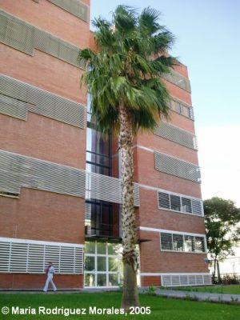
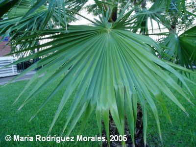

|
Washingtonia
robusta H. Wendl. in Berl. Garten-Zeit.
2: 198 (1883)
W. filifera var
robusta (H. Wendl.) Parish *
|
Arecáceas |
| Pitchardia de tallo fino, washingtonia | Palmera |
| Palmera de hasta 13
m de altura en el Campus, aunque puede llegar a alcanzar
los 25 m (1); tronco con una cuerda de 1,70 m,
siendo más ancho en la base y estrechándose en su parte
alta, con fisuras horizontales a modo de anillos, de
color marrón–grisáceo. Hojas de hasta 3 m, palmatisectas, con forma de abanico, verdes; pecíolo de 1-2 m, con espinas curvadas en los bordes; limbo de hasta 1 m de diámetro, con 30–34 segmentos largos y estrechos, hendidos en el ápice, separados por senos de hasta 90 cm., lo que hace que las hojas resulten flácidas y colgantes; segmentos con fibras que se separan del borde en el ápice. Inflorescencias de hasta 3 m, que nacen entre las hojas, arqueadas y colgantes con ramificaciones también curvas, y cada una de ellas con ramificaciones secundarias, teniendo cada cual su propia espata, muy alargada. Flores hermafroditas, de color blanquecino–rosado. Floración entre mayo y junio. Frutos de tipo baya, de 4–5 mm, monospermos y de color marrón–negruzco. |
 |
|
 |
Observaciones:
El
genero Washingtonia
está dedicado a Gorge Washington (1732–1799),
primer presidente de los Estados Unidos.
Paradójicamente, su tronco es fino y esbelto, poco robusto. Mantiene durante largo tiempo las hojas, que se van secando formando una especie de “enagua”. Este envoltorio de hojas secas y muertas supone un riesgo de incendio y un hogar para animales indeseables, por ello suelen podarse periódicamente. El fruto sirve de alimento a los pájaros. Información complementaria sobre las especies del género presentes en Sevilla en: Washingtonia_documentacion |
| Área de origen.- Es nativa de los valles, montañas y desiertos de Sonora y Bajo Méjico. Es también habitual en el paisaje de California, Florida y Arizona. | |
| Uso en el campus: Un sólo ejemplar adulto y 12 juveniles, aislados o formando grupos. |
Localización: Zona central del
Campus: |
| (1) Del
Cañizo, J.A.1991. Palmeras. 55 especies con sus
características, clima, suelo, cuidados y viveros
donde encontrarlas. Ediciones Mundi-Prensa. |
|
| María
Rodríguez
Morales
& Carlos Romero Zarco, 2005; revisada en 2006 Versión 3: C.R.Z. (2026) |
|
| *P.D.: Según L. Villanueva-Almanza &
al. (2021) esta palmera no sería más que una variedad de
tronco más alto y delgado de W. filifera. |
Botanical Journal of the Linnean
Society, Volume 196, Issue 4, August 2021, Pages
506–523. |